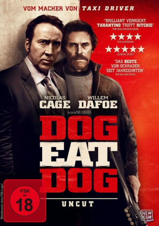
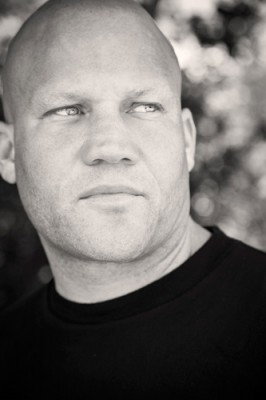
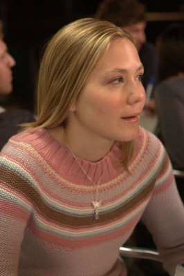
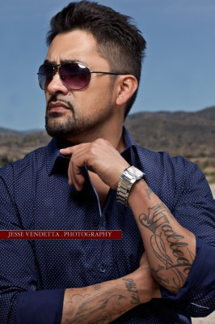

#7380 Dog Eat Dog
 gesehen am 06.11.2017
gesehen am 06.11.2017
 
 IMDB-Wertung: 4.6 / 10
IMDB-Wertung: 4.6 / 10  Tomatometer: 50
Tomatometer: 50  Metascore: 0
Metascore: 0 
Der arrogante und geniale Troy (Nicolas Cage), der unberechenbare Mad Dog (Willem Dafoe) und Mafia-Symphatisant Diesel (Christopher Matthew Cook) sind entlassene Sträflinge, die versuchen, ihre neu gewonnene Freiheit zu genießen. Dabei dürfen sie sich keinen Fehler erlauben, denn ein Verstoß gegen die strengen Bewährungsauflagen würde sie umgehend wieder in eine dunkle Zelle bringen. Aber das Trio will sich niemandem beugen und nur nach seinen eigenen Regeln spielen. So holt die Vergangenheit den von einem beschaulichen Leben träumenden Troy alsbald ein, während sich Diesel von seiner Familie abwendet und sich sein Geld bei der Mafia verdient. Mad Dog zieht Katastrophen derweil beinahe magisch an. Die Drei wollen das perfekte Verbrechen verüben. Sie sollen für einen mexikanischen Mafia-Boss das Kind seines Kontrahenten entführen.
Jahr: 2016
Dauer: 93 Minuten
FSK: 18
Land: USA Studio: RLJ EntertainmentTonspuren: DTS - ,
Untertitel: Deutsch,
Auflösung: 1080p (1920x800) Größe: 5806 MB
Genre: Thriller, Drama, Krimi
Regisseur:  Paul Schrader
Paul Schrader
Drehbuch: Edward Bunker
Soundtrack:
Darsteller:
 Nicolas Cage als Troy
Nicolas Cage als Troy Willem Dafoe als Mad Dog
Willem Dafoe als Mad Dog-  Christopher Matthew Cook als Diesel
 Omar J. Dorsey als Moon Man
Omar J. Dorsey als Moon Man-  Louisa Krause als Zoe
- Melissa Bolona als Lina
-  Reynaldo Gallegos als Chepe
- Chelcie Lynn als Sheila
- Jeff Hilliard als Gun Enthusiast
- Ali Wasdovich als Melissa
- Louis Perez als Mike Brennan
- Magi Avila als Nanny
- Tevis R. Marcum als White Power Inmate
- Todd Emmett als Prison Skin Head
- David Downie als Prison Guard
- Robert Maples als Jimmy the Face
- Jessica Sonneborn als Judge
- Mark Salas als Lawyer
- Joe Gallipoli als 2nd Deputy
- Paul Schrader als El Greco
- Chelsea Mee als Madeleine
- Tora Kim als Yolanda
 Nicky Whelan als Daniece
Nicky Whelan als Daniece- Ali Amin Carter als Duece Man
- Lauren Ashley Berry als Officer Strunk
- Leilani Barrett als Officer Lincoln
- John Patrick Jordan als Officer Jack
- Heather Chadwell als Coke Stripper
- Christopher Butler als Cop #1
- Donavan Darius als Cop #2
- Jonathan Gaietto als Manager
- Johanna McGinley als Diner Waitress
- Curtis Helm als Moon Man Double
- Richard Fike als Deputy Dawg
- Mia Jones als Neighbor
- Brian Nagel als Bar Tender
- Jocelyn Jae Tanis als Bartender
- Rex Alba als Bar Patron , uncredited
- Laura Allen als Grocery Shopper , uncredited
- Jay J. Bidwell als Customer #1 , uncredited
- Peter Chiamardas als Club Patron , uncredited
- DieselDonlow als Bar Patron , uncredited
- Kim Evans als Bar Patron , uncredited
 Rod Fielder als Supermarket Customer , uncredited
Rod Fielder als Supermarket Customer , uncredited- Joe Fishel als Club Patron , uncredited
- Logan Fry als Ten Dollar Tipper , uncredited
- David Gragg als Club Patron , uncredited
 John W. Iwanonkiw als Apple Grocer Shopper , uncredited
John W. Iwanonkiw als Apple Grocer Shopper , uncredited- Gary Jones als Bar Patron , uncredited
- Connie Kincer als Grocery Store Customer , uncredited
Datei: X:\FSK18-2016\Dog Eat Dog (2016, FSK18, 1920x800).mkv seit 06.11.2017
Festplatte: FSK18
 Es gibt insgesamt 25 Filme in der Gruppe 'FSK18-2016'
Es gibt insgesamt 25 Filme in der Gruppe 'FSK18-2016'